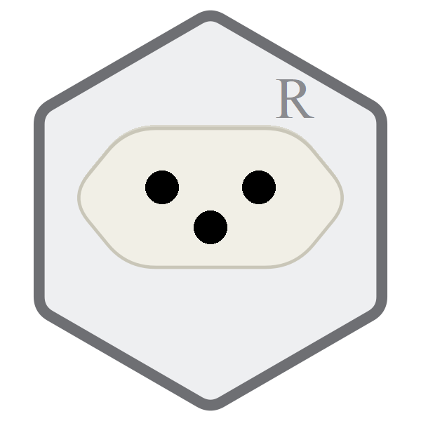
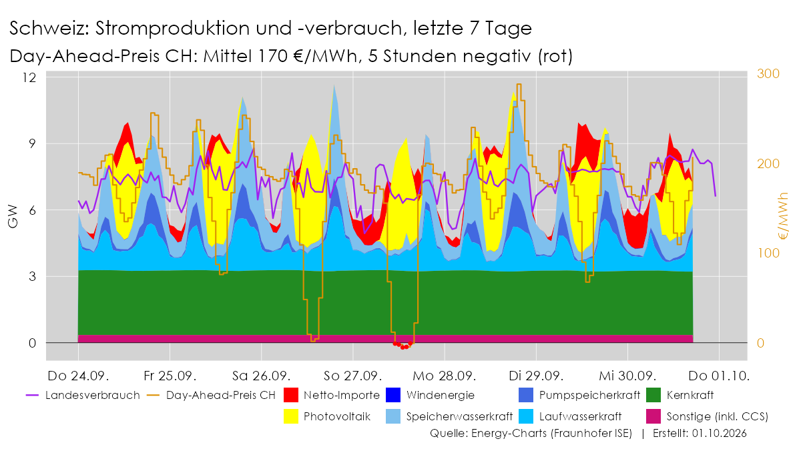
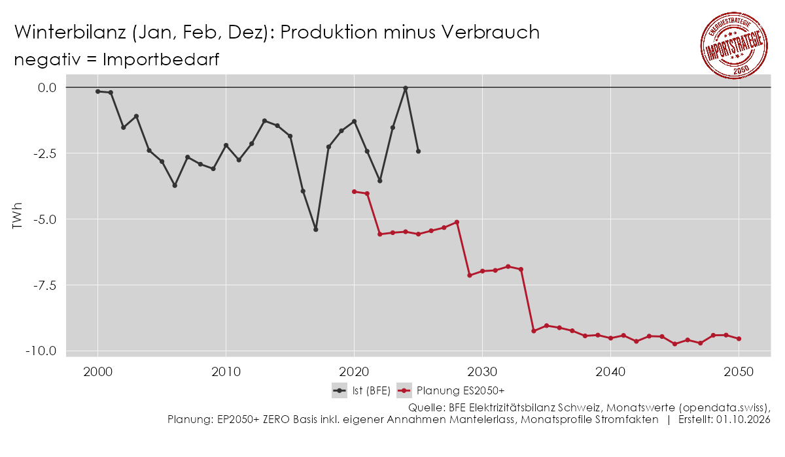
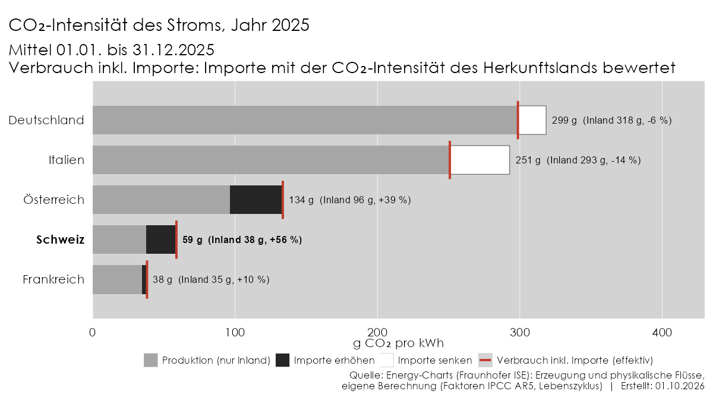
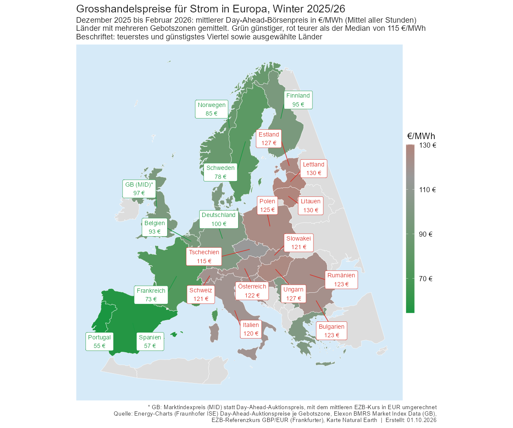
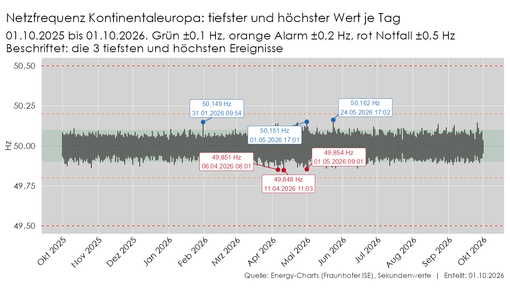

flowchart LR A["1. Abrufen<br/>Daten holen<br/>und ablegen"] --> B["2. Aufbereiten<br/>einheitliche Begriffe,<br/>Summen, Monate, CO₂"] B --> C["3. Darstellen<br/>Grafik im<br/>einheitlichen Stil"]
stromtools: Schweizer Stromdaten verständlich gemacht
Ein R-Werkzeugkasten, der öffentliche Energiedaten holt, prüft und in einheitliche Grafiken verwandelt

TippAuf einen Blick
stromtools ist ein Paket für die Programmiersprache R. Es holt Daten zur Schweizer und europäischen Stromversorgung direkt bei den offiziellen Stellen ab, rechnet sie nachvollziehbar um und zeichnet daraus Grafiken, die alle gleich aufgebaut sind. Jede Zahl lässt sich bis zur Quelle zurückverfolgen.
1 Wozu gibt es stromtools?
Wer sich mit der Schweizer Stromversorgung beschäftigt, stösst immer wieder auf dieselben Fragen:
- Woher kommt der Strom, den die Schweiz diese Woche verbraucht hat?
- Wie gross ist die Lücke im Winter, heute gemessen und nach der Planung der Energiestrategie 2050?
- Wie viel CO₂ steckt im Strom, wenn man die Importe mitrechnet?
- Wie teuer ist Strom bei uns im Vergleich zu den Nachbarn?
- Wie stabil ist das Netz?
Die Daten dazu sind öffentlich, aber verstreut: beim Bundesamt für Energie (BFE), bei Swissgrid, bei der ElCom, bei Eurostat, beim Fraunhofer-Institut und bei der Internationalen Atomenergie-Agentur. Jede Stelle hat ein anderes Format, andere Begriffe und andere Zeiträume.
stromtools nimmt diese Arbeit ab. Es ist entstanden, weil ich für mehrere eigene Projekte immer wieder dieselben Daten geholt und aufbereitet habe: ein Energie-Dashboard, Faktenblätter zur Energiestrategie und Grafiken für Vorträge. Jetzt geschieht das an einer Stelle, einmal sauber geprüft, und alle Projekte benutzen dieselben Bausteine.
2 Was man damit sehen kann
Fünf Beispiele, alle mit stromtools erzeugt.
2.1 Die letzte Woche: Woher kommt der Strom?

Die farbigen Flächen zeigen die Produktion nach Kraftwerksart, die violette Linie den Verbrauch. Die orange Linie ist der Börsenpreis für den nächsten Tag (Day-Ahead) auf einer eigenen Achse rechts. Rote Flächen oben zeigen, wann die Schweiz netto importieren musste. Man sieht zum Beispiel, wie der Preis am Sonntagmittag bei viel Solarstrom unter null fällt.
2.2 Der Winter: Wie gross ist die Lücke?

Produktion minus Verbrauch in den Monaten Januar, Februar und Dezember. Schwarz ist gemessen, rot ist die Planung. Der rote Stempel «Importstrategie» steht auf jeder Grafik mit Planzahlen. Er erinnert daran, dass die Planung im Winter auf Importe setzt.
2.3 CO₂: Was ändert sich mit den Importen?

Grau ist der CO₂-Gehalt des im Land produzierten Stroms. Schwarz kommt dazu, was die Importe zusätzlich bringen, weiss umrandet ist, was sie senken. Die rote Linie ist der tatsächliche Wert des verbrauchten Stroms. Die Schweizer Produktion ist sehr sauber, mit den Importen steigt der Wert um mehr als die Hälfte.
2.4 Europa im Winter: Preise im Vergleich

Der mittlere Börsenpreis im letzten Winter, Land für Land. Die Schweiz lag beim teuren Südosten Europas, nicht bei Frankreich. Eine zweite Karte zeigt auf dieselbe Weise den CO₂-Gehalt der Stromproduktion.
2.5 Netzstabilität: Wie stark schwankt die Frequenz?

Im europäischen Stromnetz schwingt der Strom mit 50 Hertz. Weicht die Frequenz ab, stimmen Produktion und Verbrauch nicht überein. Die Grafik zeigt für jeden Tag des letzten Jahres den tiefsten und höchsten Sekundenwert. Die Alarmgrenze von ±0,2 Hz wurde nie erreicht. Die grössten Ausschläge kamen meist kurz nach einer vollen Stunde, wenn der Stromhandel seine Fahrpläne wechselt.
3 Woher die Daten kommen
stromtools holt die Daten direkt aus dem Internet und legt eine Kopie ab (Cache). Ein zweiter Lauf geht dadurch schnell und belastet die Anbieter nicht.
| Bereich | Quelle |
|---|---|
| Produktion, Verbrauch, Preise, Grenzflüsse, Netzfrequenz | Energy-Charts, Fraunhofer-Institut für Solare Energiesysteme ISE |
| Elektrizitätsbilanz, Statistik der erneuerbaren Energien, Speicherseen, Energieperspektiven 2050+ | Bundesamt für Energie (BFE), opendata.swiss und Publikationsdatenbank |
| Redispatch (Eingriffe ins Netz) | Swissgrid |
| Strompreise der Haushalte | ElCom (Schweiz), Eurostat (Nachbarländer) |
| Gasspeicher | AGSI, Gas Infrastructure Europe |
| Kernkraftwerke weltweit | Internationale Atomenergie-Agentur (IAEA), World Nuclear Association |
| CO₂ je Kraftwerksart | Weltklimarat IPCC, Lebenszyklus-Werte |
| Planwerte | Energieperspektiven 2050+ des BFE, angepasst an das neue Stromgesetz (Mantelerlass); eigene Annahmen, als solche gekennzeichnet |
4 Wie es funktioniert
stromtools arbeitet in drei Schritten. Jeder Schritt übernimmt das fertige Ergebnis des vorherigen.
- Abrufen: Für jede Quelle gibt es eine Funktion, die die Daten holt, zum Beispiel
fetch_ec_public_power()für die Produktion von Energy-Charts. - Aufbereiten: Die Daten bekommen dieselben deutschen Begriffe wie die Statistik des BFE. Gemessene Werte und Planwerte laufen durch dieselben Rechnungen und sind deshalb direkt vergleichbar.
- Darstellen: Jede Grafikfunktion beginnt mit
grafik_und liefert eine fertige Grafik, die sich bei Bedarf weiter anpassen lässt.
Alle Funktionen mit Beschreibung, Aufruf und Argumenten stehen in der Funktionsreferenz.
Ein Beispiel, wie das in R aussieht:
library(stromtools)
# 1. Abrufen: Produktion der Schweiz der letzten sieben Tage
mix <- fetch_ec_public_power("ch", Sys.Date() - 7, Sys.Date() - 1)
# 2. und 3. Aufbereiten und als Grafik darstellen
grafik_produktionsmix(produktionsmix_de(mix), last = last_aus_mix(mix))5 Worauf man sich verlassen kann
- Gemessen und geplant sind getrennt. Gemessenes ist schwarz und durchgezogen, Geplantes rot und gestrichelt. Grafiken mit Planzahlen tragen einen Stempel.
- Jede Grafik nennt ihre Quellen, so genau, dass man die Zahl selbst nachschlagen kann.
- Neue Quellen werden geprüft, bevor sie an alte angehängt werden: Für ein Jahr, das in beiden vorkommt, müssen die Werte übereinstimmen.
- Fehler werden offen ausgewiesen. Beim Übernehmen älterer Auswertungen sind zum Beispiel eine doppelt gezählte Mehrwertsteuer und ein fester statt jährlicher Wechselkurs aufgefallen. Beides ist korrigiert und dokumentiert.
- Keine versteckten Annahmen: Wo Daten fehlen, steht das in der Grafik, zum Beispiel «Kosten = Untergrenze», statt dass Lücken still aufgefüllt werden.
- Dieselbe Methode überall: Alle CO₂-Werte beruhen auf denselben Faktoren, damit die Zahlen zueinander passen.
6 Was stromtools nicht ist
- Kein amtliches Zahlenwerk. Die Daten stammen aus offiziellen Quellen, die Auswertungen sind aber meine eigenen. Die Planwerte enthalten meine Annahmen zum neuen Stromgesetz.
- Keine Echtzeit-Überwachung. Die Grafiken zeigen abgeschlossene Zeiträume, in der Regel bis gestern.
- Kein Ersatz für die Daten der Netzbetreiber. Ursachen von Netzereignissen lassen sich aus öffentlichen Daten nur eingrenzen, nicht beweisen.
7 Kleines Glossar
| Begriff | Bedeutung |
|---|---|
| TWh, GWh, GW | Terawattstunde (Milliarde Kilowattstunden) und Gigawattstunde sind Energiemengen. Gigawatt ist eine Leistung, also Energie pro Zeit. Die Schweiz verbraucht rund 60 TWh pro Jahr. |
| Day-Ahead-Preis | Börsenpreis für Strom, der am nächsten Tag geliefert wird, Stunde für Stunde festgelegt. |
| Negativer Preis | Es gibt so viel Strom, dass Produzenten fürs Abnehmen bezahlen. |
| Residuallast | Verbrauch minus Wind- und Solarstrom: der Teil, den steuerbare Kraftwerke liefern müssen. |
| Redispatch | Der Netzbetreiber greift ein und lässt Kraftwerke mehr oder weniger produzieren, um Leitungen zu entlasten. |
| Netzfrequenz | Takt des Wechselstroms, in Europa 50 Hertz. Sinkt sie, fehlt Strom; steigt sie, gibt es zu viel. |
| g CO₂/kWh | Gramm CO₂ pro Kilowattstunde Strom, über den ganzen Lebenszyklus der Kraftwerke. |
| Mantelerlass | Das 2024 angenommene Stromgesetz mit den neuen Ausbauzielen für erneuerbare Energien, in Kraft seit 2025. |
8 Stand und Kontakt
stromtools ist zurzeit ein privates Paket und wird laufend erweitert. Über 100 Funktionen (Funktionsreferenz) erzeugen heute 38 Grafiken zu Preisen, Versorgung, Ausbau, CO₂, Verbrauch und Kernenergie.
Fragen und Hinweise gern an Beat Moser.